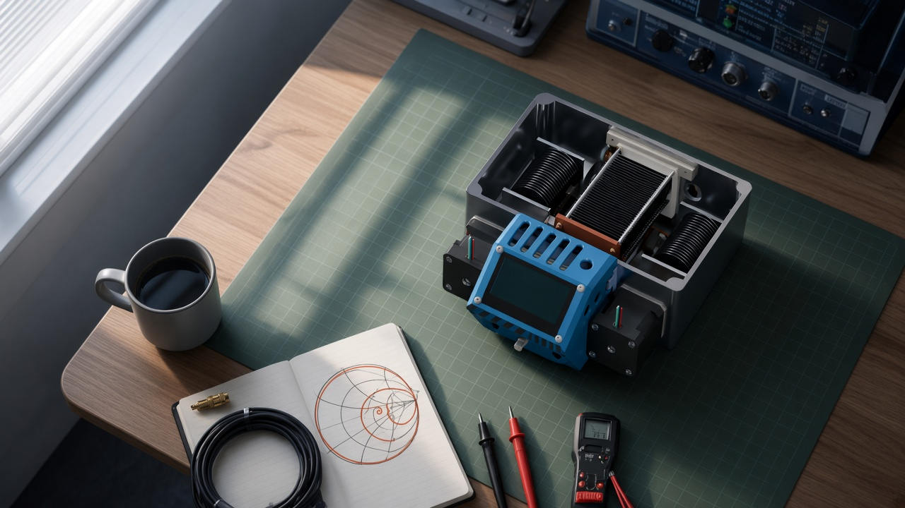

The Lab
Visual storyboard · one room, five stations, one continuous camera.

The local concept frame is missing. Restore the images in reel/world/concepts/ to see it. The storyboard and room layout are still available below.
AI concept still. Device details vary. Camera travel awaits the Blender animatic.
Each image is a keyframe. The slider shows the planned movement and reading intervals, rather than playing a camera animation.
One fixed room
The line joins the proposed camera waypoints in plan view. Blender must solve the smooth path and check clearances. Select a station to visit its rest.
The choices behind these frames
Cool morning at the RF bench, a coax descent to the floor, then a gradual move into evening. The close stays at dusk.
- A fixed bench and floor connect all five stations.
- The final reveal takes 8% of the scroll, split equally between travel and a reading rest.
- Companion and keychain each get a reading step at the same desk pose.
- About and Experience share a locked wall pose with separate reading steps.
- Real photos, logos and models replace the concept frames in production.